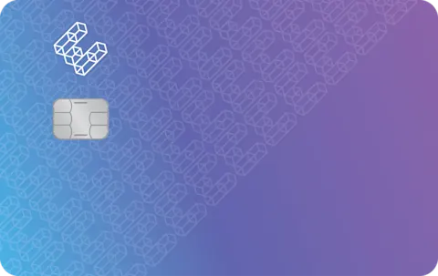
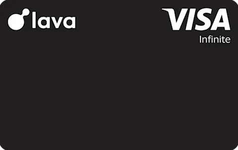
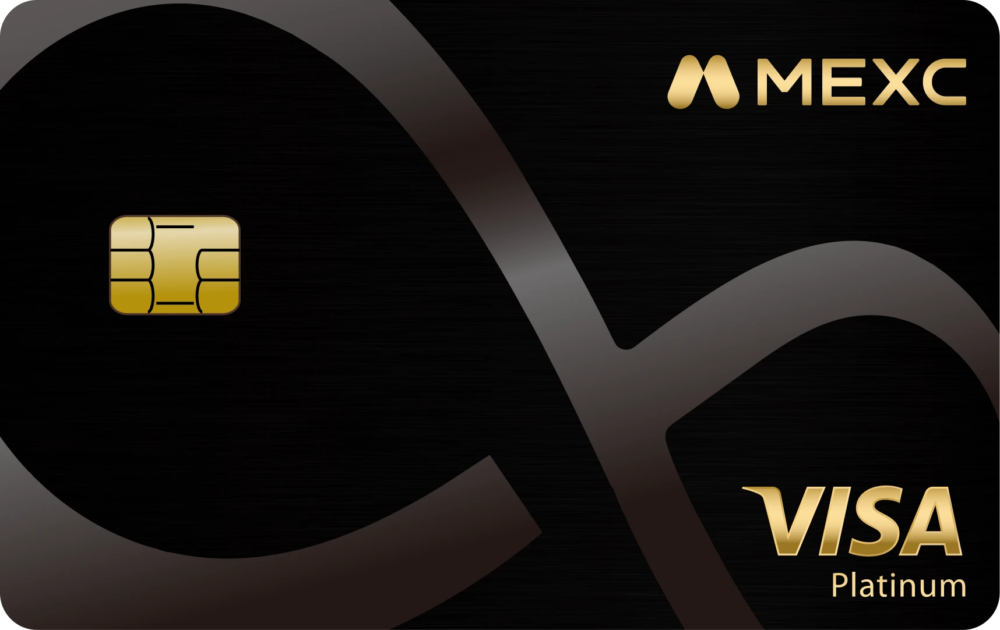
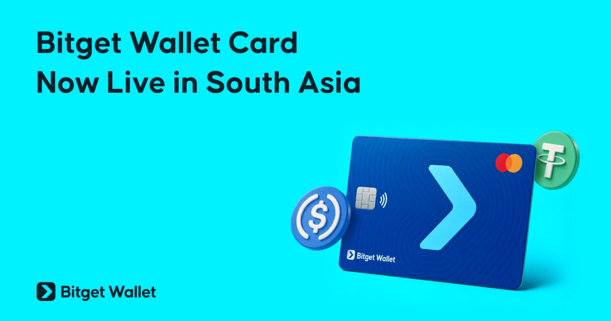
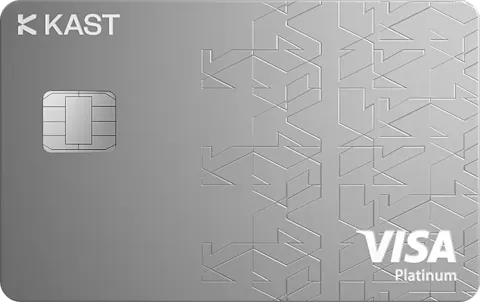
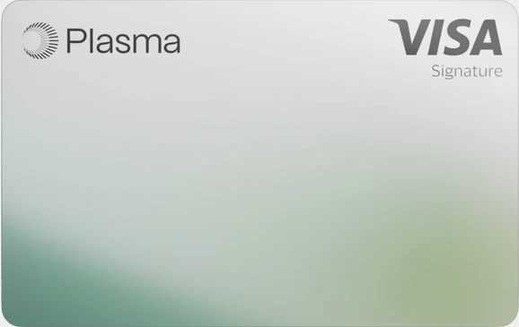

2026 最佳加密货币返现卡对比：返现、费用与开卡奖励
概述
选加密货币卡时，只看广告里的返现率很容易做错判断。真正影响到手回报的，还有返现上限、消费分档、手续费、返现币种和地区限制。
为了方便横向比较，下面统一按免费档、每月消费 $1,000、美国境内消费来估算实际返现。具体权益和可申请地区可能随时变化，申请前仍要以官方页面和 App 内显示为准。
先提醒三点：
- 有些卡只开放给特定国家或地区的用户；
- 平台币返现会受到币价和领取规则影响；
- 本文只做信息整理，不构成投资或办卡建议。
先说结论
- 美国用户看重综合返现：EtherFi，每月前 $2,000 合格消费返现 3%
- 想直接拿 BTC：Lava，日常返现 3%，部分合作商户最高 5%
- 想拿 USDT，且不在受限地区：MEXC 卡，Standard 档名义返现 4%，扣除 1% 消费手续费后约为 3%
- 更看重自托管体验：Bitget Wallet 卡，钱包直连，返现最高 3%
- 准备在开卡后集中消费：KAST，首 $1,000 消费叠加里程碑奖金后约可获得 $115
- 每月消费不超过 $500：Plasma One Lite，前 $500 返现 2%
免费档返现对比
| 卡 | 名义返现 | 费用与限制 | $1,000/月实际返现 |
|---|---|---|---|
| MEXC 卡 | 4%（Standard 档），返现为 USDT | 无年费；消费手续费 1%；月返现上限 100 USDT；美国等 69 个国家或地区不可用 | 约 3.00%（$30） |
| EtherFi | 每月前 $2,000 消费 3% | 免费 Core 会员；返现为 ETHFI；锁定 7 天；满 $5 可领取；17 个州不可用 | 3.00%（$30） |
| Lava | 美国用户 3% | 无年费、无交易费；返现为 BTC；累计满 0.001 BTC 才可赎回 | 3.00%（$30） |
| Bitget Wallet 卡 | 最高 3% | 设有月度返现上限；使用 USDT 或 USDC 充值；自托管钱包直连 | 最高 3.00%（$30） |
| KAST | 每月前 $2,000 消费 1.5% | 无年费；USD 卡消费 0 手续费；返现为 USD | 1.50%（$15） |
| Plasma One | 前 $500 消费 2%，之后 0.1% | 免费 Lite 档；返现为 XPL，需要手动兑换为 USD | 1.05%（$10.50） |
MEXC 卡在美国不可用，表格只用于帮助非美国地区用户比较。它的 0 手续费促销已经结束，目前消费手续费为 1%。
六张卡分别适合谁
EtherFi：综合返现更高

如果你在支持地区、每月消费不超过 $2,000，EtherFi Core 的 3% 返现很直接。需要注意的是，奖励以 ETHFI 发放，到账后锁定 7 天，币价变化也会影响实际价值。
- 每月前 $2,000 消费返现 3%，$2,001 至 $3,000 返现 1%，之后为 0.5%
- 每月消费 $1,000，预计获得约 $30 的 ETHFI
- 支持 EUR、USD（RWA）、ETH、BTC 等资产 staking
- 17 个州不可用，领取前还要满足 $5 的最低门槛
Lava：适合想拿 BTC 的用户

Lava 的特点不是复杂的分档，而是把奖励直接做成 BTC。美国用户日常合格消费返现 3%，Amazon、Apple、Netflix 等合作商户最高可到 5%。
- 每月消费 $1,000，预计获得约 $30 的 BTC
- 免费卡即 Visa Infinite，包含部分旅行权益
- 可使用 BTC 信用额度，$100,000 以下年利率为 7.5%
- 返现累计到 0.001 BTC 后才能赎回，低频用户需要等待更久
MEXC 卡：USDT 返现高，但限制也多

MEXC 卡的返现数字很吸引人，但实际回报要把 1% 消费手续费算进去。Standard 档名义返现 4%，因此每月消费 $1,000 时，实际回报约为 $30。
- Standard、Premier、Elite 三档返现分别为 4%、6%、10%
- 每月返现上限分别为 100、300、800 USDT
- 档位由每月最后一天的 VVIP 等级（M-Score）决定
- 返现会在次月 15 日前发到现货账户，退款订单会扣回奖励
- 美国、中国等 69 个国家或地区不可用，高档位也依赖平台活跃度
Bitget Wallet 卡：更强调自托管

这张卡更适合已经在使用自托管钱包的人。资产仍由自己管理，需要消费时再划转到独立的卡账户，不必长期把全部余额放在托管平台。
- 使用 USDT 或 USDC 充值，消费返现最高 3%
- Mastercard 网络覆盖广，可在 Bitget Wallet App 内开通虚拟卡
- 返现币种和月度上限以 App 内显示为准
- 地区仍在逐步开放，申请前要先确认资格
KAST：新人奖励更有吸引力

KAST 的常规返现只有 1.5%，但新人里程碑奖金让它更适合开卡后有明确消费计划的人。首 $1,000 消费如果满足全部条件，常规返现和奖金合计约为 $115。
- 消费满 $100、$500、$1,000，可分别获得 $20、$30、$50 奖金
- 免费 Standard 档每月前 $2,000 消费返现 1.5%
- 默认提供 Visa Platinum 虚拟卡，并有多种封面
- USD Prime Vault 为 3.3% APY，Gauntlet Alpha Vault 最高 7% APY
Plasma One：适合小额月度消费

Plasma One Lite 的优势集中在每月前 $500 消费。超过这个额度后返现会降到 0.1%，因此更适合作为小额日常消费卡，而不是主力卡。
- 每月前 $500 消费返现 2%，之后为 0.1%
- 每月消费 $1,000 时，综合返现约为 $10.50
- 返现以 XPL 发放，需要手动兑换为 USD
- Earn 功能为 3.85% APY，无锁仓要求，并支持 Apple Pay 和 Google Pay
开卡奖励和限时优惠
常规返现决定长期体验，开卡奖励更适合短期比较。下面这些优惠都有额外条件，不能只看宣传数字。
| 卡 | 优惠内容 | 主要条件 | $1,000 消费预估价值 |
|---|---|---|---|
| KAST | 里程碑奖金最高 $100 | 各地区活动可能不同，以 App 内 Rewards 页面为准 | 约 $115（含 $15 常规返现） |
| Oobit | OOB 充值消费最高 10%；USDT 或 USDC 消费最高 5%（$200 内） | 累计消费 $250 解锁 Level 2；单笔至少 $1；交易费为 $0.25 或 1% 取高者；仅限 Tap to Pay | 扣费后约 $55 |
| Lava | 合作商户最高 5% BTC 返现 | 仅限合作商户；累计满 0.001 BTC 才可赎回 | 约 $50 |
| MEXC 卡 | 邀请人 20 USDT，被邀请人 10 USDT | 被邀请人首次入金 7 天内净入金至少 100 USDT，持仓 24 小时并激活卡片 | 不计入消费返现 |
KAST 的奖励路径最清楚，适合开卡后短期内能够完成 $1,000 消费的人。
Oobit 的名义比例最高，但要先升级到 Level 2，还要考虑交易费和 Tap to Pay 限制。
Lava 的 5% 返现只适用于合作商户，适合消费场景比较集中的用户。
MEXC 卡 的邀请奖励需要满足入金、持仓和激活条件，它和日常消费返现是两套规则。
常见问题
每月消费 $1,000，哪张免费卡更划算？
美国用户可以优先比较 EtherFi 和 Lava，两张卡的常规回报都约为 $30。新人首月如果能完成全部里程碑，KAST 的短期奖励更高。不在 MEXC 受限地区的用户，也可以考虑扣除手续费后约 3% 的 Standard 档。
加密返现卡是怎么运作的？
完成符合条件的消费后，发卡方会按规则发放加密货币、稳定币、平台代币或 USD。有些奖励自动到账，有些需要手动领取，或者要先经过锁定期。
什么是实际返现？
实际返现是扣除返现上限、消费分档、手续费、兑换成本和外汇点差后，真正能拿到的回报。广告写 3%，并不代表每一笔消费最终都有 3%。
哪些费用最容易吃掉返现？
常见的有加密货币兑换费、外汇手续费、会员费、取现费和汇率点差。名义返现高但费用多的卡，可能还不如一张低返现、低费用的卡。
这些卡有实体卡吗？
大部分平台会先提供虚拟卡，实体卡通常要另外支付制卡费或运费。是否能申请实体卡仍取决于地区和账户资格。
退款后返现会被收回吗？
通常会。交易退款、撤销或拒付后，发卡方会取消待发放奖励，或按比例扣回已经发放的返现。
返现币种重要吗？
很重要。USD 和稳定币更容易记账；BTC 有价格波动；ETHFI、XPL 等平台币还可能存在锁定期、领取门槛和额外的价格风险。